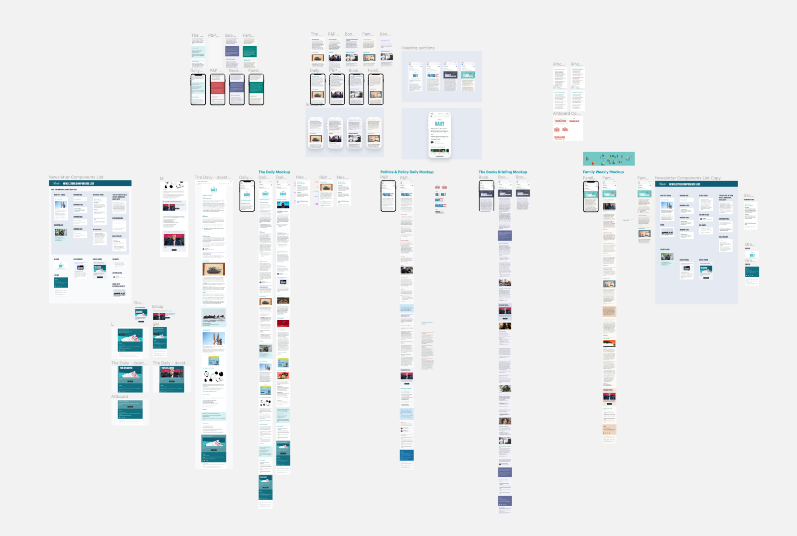
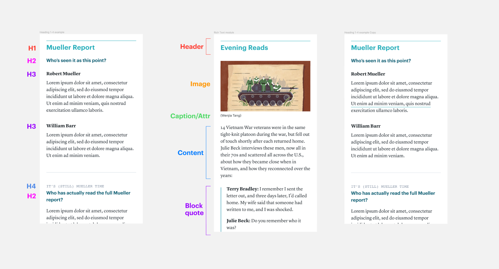
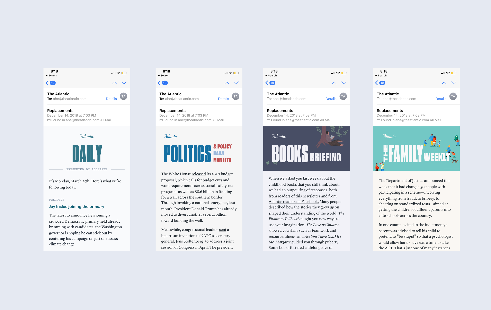
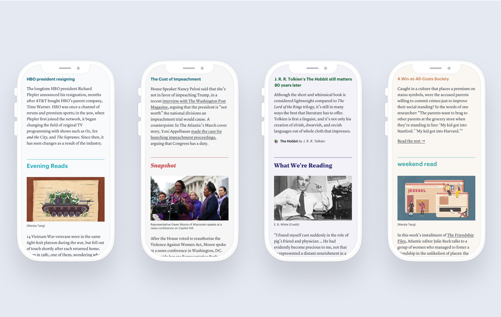
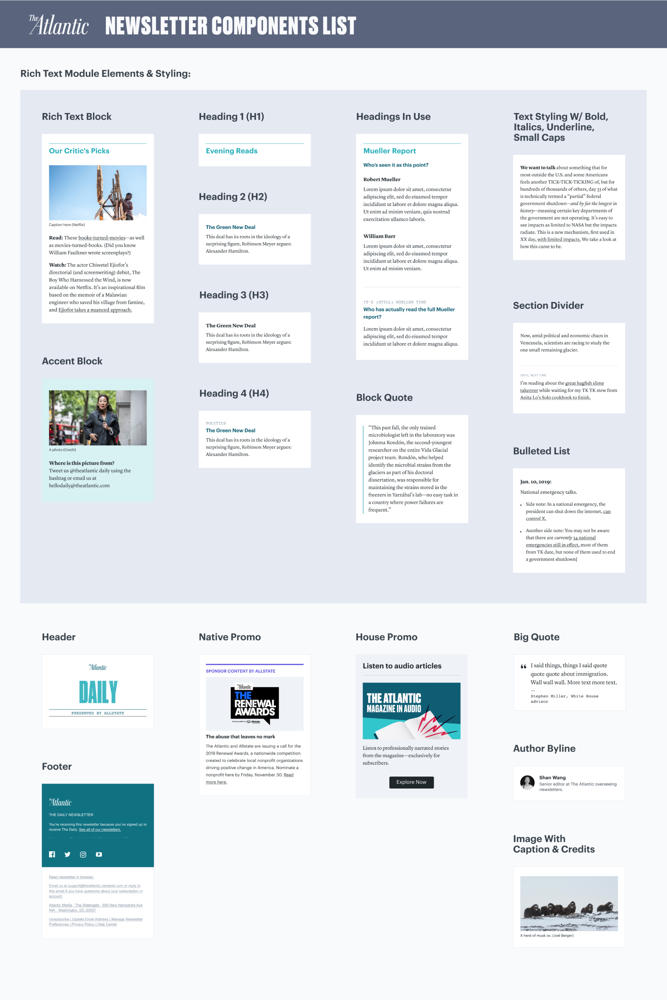

|
The Atlantic — Newsletter Suite I designed a modular newsletter suite for The Atlantic’s newsletters, which launched with the redesign of the flagship The Atlantic Daily. I also wrote a Medium post about how the process went. 
Problem The newsletters infrastructure was showing it’s age. Originally built with limited styling, the newsroom needed a richer editorial toolkit to spin up various newsletter formats, and we wanted a more flexible backend to evolve newsletters as a standalone editorial product. Initial research I surveyed designs from a variety of other popular media newsletters:
I also interviewed editors to understand newsroom needs and came up with a list of formats to support:
Goals
Wireframes I designed multiple iterations of various components, focusing on various heading styles and combinations, quote sections, images, and author bylines. Through multiple reviews with editorial and product/engineering stakeholders, a range of components and selected heading 1-4 styles were refined.
 Explorations for various newsletters
 Breakdown of modules in use Final designs The timing of our newsletter suite redesign coincided with an ambitious overhaul of our flagship newsletter, The Atlantic Daily. Using the styled components, I created a layout that gave the newsletter an airier, more modern look, as well as highlighting it as a platform to provide context on the big stories of the day, feature the range of our coverage, and resurface gems from our archives.
 Stylizing our existing newsletters
 Themeing with different heading styles and colors Documentation As a firm advocate for thorough documentation, I created a few artifacts to document the newsletter suite, including a component list and a styleguide for editorial. This documentation will result in fewer inconsistencies and allow future newsletter to be spun up following these guidelines, as well as serve as a place to note any future changes and improvements as The Atlantic’s newsletters grow.

Aftermath After I left The Atlantic, various newsletters have been built or relaunched with these newsletter components. The Atlantic Daily refreshed their brand following the entire magazine redesign, and the components held up to this redesign. Weekly Planet also launched using the newsletter suite. Always rewarding as a designer to see your work live on afterwards. |
I’m a product designer who has worked on customer-facing web apps, internal tools, and media products. I'm excited about tech & design for social and sustainable impact.
Currently a senior product designer at Arcadia 🌱
Read more..